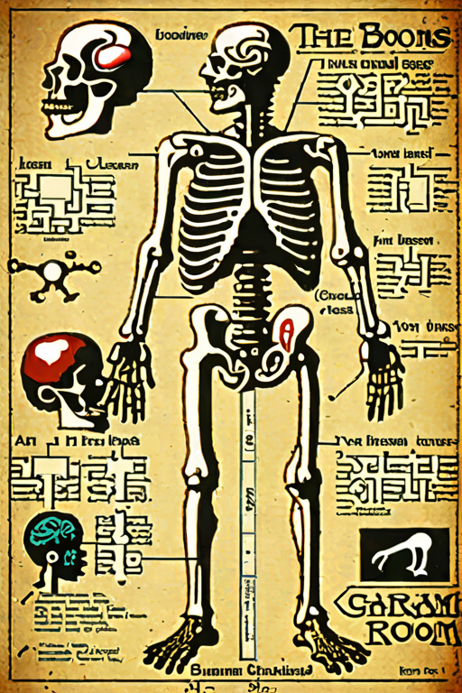

The Anatomy Lesson
The body rebuilt from other things — stained glass, coral, circuit boards, wrought iron, recursive staircases. Devotional and clinical at once.
Begin the guided tour →
The legend is illegible.
- 01 The Cathedral Body Organs rebuilt from stained glass and living coral.
- 02 Iron & Recursion The body as filigree, gears, and stairs going nowhere.
- 03 The Body as Landscape Somewhere between a person and a place.
- 04 The Botanical Body The body remembers it was once a garden.
- 05 The Porcelain Ward Handle the patient with care.
- 06 The Woven Body Soft anatomy, coming apart at the thread.
Enter any room — or walk them in order from the top.